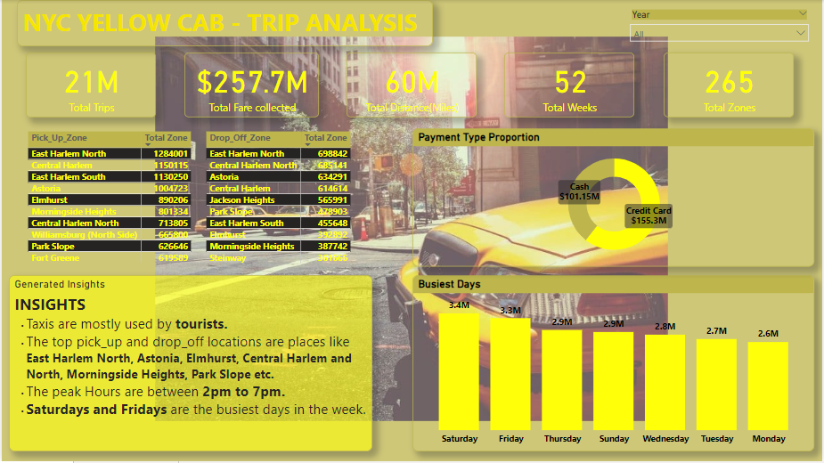

NYC Taxi Trips Analysis
About
This dataset contains 6 tables in csv format, along with a geospatial map in TopoJSON and Shapefile formats. The 4 Taxi Trips tables contain a total of 28 million Green Taxi trips in New York City from 2017 to 2020. Each record represents one trip, with fields containing details about the pick-up/drop-off times and locations, distances, fares, passengers, and more. The 454 Calendar table contains a fiscal calendar (2017-2018) used by the Taxi & Limousine Commission, with fields containing the date and fiscal year, quarter, month, and week. The Taxi Zones table contains information about 265 zone locations in New York City, including the location id, borough, and service zone. The Taxi Zones Map files contain a map of New York City with divisions for the 265 locations that can be used to create custom map visuals in Power BI (TopoJSON) or Tableau (Shapefile).
The Objective
To use the Historical Data to answer the following questions:
• What's the average number of trips we can expect this week?
• What's the average fare per trip we expect to collect?
• What's the average distance traveled per trip?
• How do we expect trip volume to change, relative to last week?
• Which days of the week and times of the day will be busiest?
• What will likely be the most popular pick-up and drop-off locations?
The Data Cleaning and Transformation
The following steps were taken to clean and transform the raw data before answering the Questions:
• I focussed on trips that were NOT sent via “store and forward”.
• Attention was also given to street-hailed trips paid by card or cash, with a standard rate.
• I removed any trips with dates before 2017 or after 2018,
along with any trips with pickups or drop-offs into unknown zones.
• It was assumed that any trips with no recorded passengers had 1 passenger.
• If a pickup date/time is AFTER the drop-off date/time, the dates were swapped.
• I removed trips lasting longer than a day, and any trips which showed both a distance
and fare amount of 0.
• Records where the fare, taxes, and surcharges are ALL negative, I made them positive.
• For trips that had a fare amount but have a trip distance of 0, the distance was calculated with this equation : (Fare amount - 2.5) / 2.5.
• For trips that have a trip distance but have a fare amount of 0,
the fare amount was calculated with this equation: 2.5 + (trip distance x 2.5).